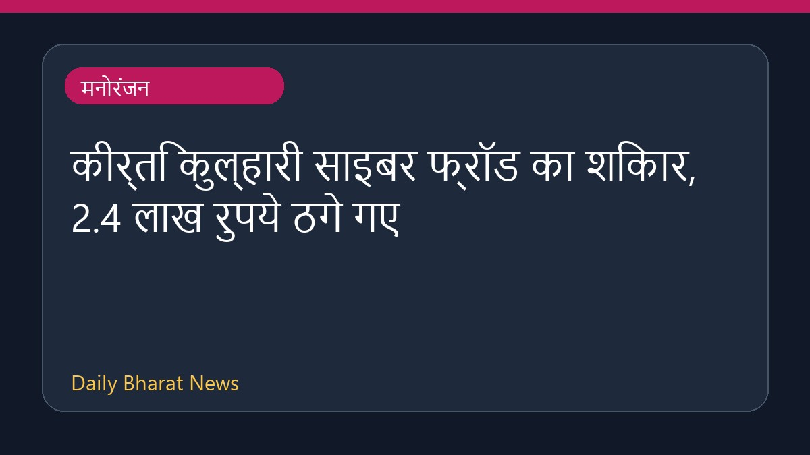

कीर्ति कुल्हारी साइबर फ्रॉड का शिकार, 2.4 लाख रुपये ठगे गए

अभिनेत्री कीर्ति कुल्हारी साइबर धोखाधड़ी का शिकार हो गईं। उनके क्रेडिट कार्ड से अनधिकृत लेनदेन के जरिए लगभग 2.4 लाख रुपये चोरी हो गए। इस घटना के सामने आने के बाद अभिनेत्री ने मुंबई पुलिस में आधिकारिक शिकायत दर्ज कराई है। इस मामले में मनोरंजन जगत से जुड़ी अन्य कोई और विस्तृत जानकारी फिलहाल उपलब्ध नहीं है।
मूल स्रोत: Entertainment Sources
Kirti Kulhari loses Rs 2.4 lakh to cyber fraud; actress files a complaint with Mumbai Police - The Times of India ↗
Kirti Kulhari loses Rs 2.4 lakh to cyber fraud; actress files a complaint with Mumbai Police - The Times of India ↗